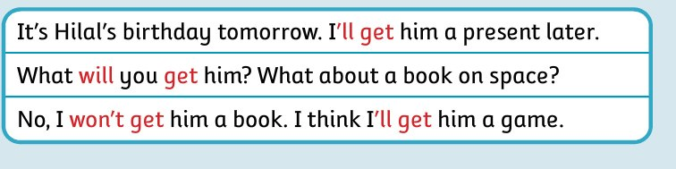

التدريبات وخيارات الدرس
جاهز للبدء
نص الفقرة المسموعة
جرّب بنفسك
Prepared by: Mohamed Mostafa Al Shorbagy
Regional Supervisor, Wusta Governorate
Regional Supervisor, Wusta Governorate
will و won’t من محتوى الوحدة الثالثة. وملاحظات القواعد المرفقة. الشرح والأمثلة والتدريبات الإضافية تعليمية وأصلية، وليست اختبارًا رسميًا.
من كتاب الطالب · صفحة 107

| I'll get | سأحضر (قرار الآن) |
| What will you get? | ماذا ستحضر؟ |
| won't | لن |
أحسنتم! اكتمل الشرح والتدريب.